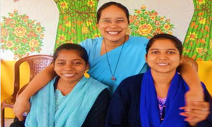

‘I listened to God’s deep desire and loving call for me.’ – Mary Ward

The enquirer is invited into a discernment process to begin to discover God’s particular call for her. The process of exploring and discerning must be undertaken at the request of the enquirer and in freedom. Opportunities are provided for both the enquirer and members of the IBVM to meet and get to know each other. If several are at this stage of enquiry they will have the opportunity to meet each other.
When the enquirer indicates that she intends to make application to the Province Leader to begin the candidacy programme the following elements need to be fulfilled:
- The enquirer’s motivation and her potential for religious life in the IBVM is evaluated
- In general the person joining candidacy must be between 18 and 35.
- She should have completed her Class XII.
- The following documentation is required: birth, baptism and confirmation certificates, school certificates and letters of recommendation.
- If someone has been a member of another congregation further information is required, as well as at least a year’s interval before admission to candidacy.
- The applicant writes to the Province Leader asking to become a candidate and the Province Leader writes accepting the enquirer who is then admitted to candidacy.
‘Our greatness and strength consist in this – that we have free and open access to God.’ – Mary Ward
Candidacy
Candidacy is the period of time during which an individual undertakes a personal discernment about her call to religious life, before asking to be formally admitted to the Institute as a novice.
The aim is to provide the candidate with sufficient time and opportunity to get to know the Institute and for the members of the Institute to get to know the candidate. It will involve providing the candidate with help and guidance in:
- discernment and deepening of vocation,
- ongoing radical conversion of heart to personal discipleship of Jesus and an ability to reflect on experience in the light of the Gospel,
- integration into the Institute, its charism and mission,
- readiness, by means of appropriate study and formation, to make profession of temporary vows.
The experiences necessary for the Novitiate are a thirty days retreat based on the Spiritual Exercises of St.Ignatius, an experience of living in an IBVM community and an apostolic experience of working with religious or lay workers outside the Institute.
The novice writes to the Province Leader requesting admission to first profession
The Province Leader and each member of the Province Council meet with the novice individually. The Province Leader writes admitting the novice to first profession.
‘Cherish God’s vocation in you. Let it be constant, efficacious and loving.’ -Mary Ward
Temporary Profession
During temporary profession the member, having taken vows at first profession, now undertakes further discernment. She seeks confirmation of her vocation in the Institute of the Blessed Virgin Mary while she engages in the mission of the Institute, either in studies or apostolic works. The period of temporary profession is six to nine years.
The temporary profession programme enables each IBVM member:
- to become immersed in the life, spirit and mission of the Institute and to test her vocation,
- to continue her formation as a vowed religious, to deepen and nurture her love for and commitment to God and to learn to integrate the human, spiritual, communal and ministerial dimensions of her life as an IBVM member,
- to grow in her ability to reflect on experience and to discern and respond to the movements of the spirit of God within her,
- to prepare for ministry in the Institute: to follow a professional course of studies/training and a theological course which will enrich her ministry,
- to come to a decision regarding permanent commitment in the Institute
Annually the temporary professed submits a review on the key areas of the IBVM way of life to enable both, she and the Institute to consider how the formation process is proceeding as regards to her. She renews her vows for a period of one, two or three years.
At least one year before she desires to make perpetual profession she makes a formal request in writing to the Province Leader asking permission to proceed with her application for perpetual profession. Once she has been accepted by the Province Leader and Province Council she makes her formal request in writing to the Institute Leader who has the final authority to admit to perpetual profession with the consent of her council. Two months before perpetual profession she begins a special period of preparation during which time she withdraws from all ministry involvement.
‘It is good pleasing the Friend of friends...to be entirely and forever at God’s disposal’ - Mary Ward
Final Vows
The IBVM member bears witness to one way of living fully the commitment made in Baptism to love and serve God in Christ. Perpetual profession is the beginning of a new phase of the member’s life in the Institute. The vows are made in the context of the Eucharist.
‘From the beginning to the end of life, we are in a process of growth and development; a process of discovering and learning, failing, rising, and re-committing ourselves to the vocation we are called, as we seek to discern the work of the Spirit in the unfolding story of our lives.’ Const.5.2
‘I had resolved to serve Him entirely. I begged grace to do this for His goodness and the desire He had that I should be wholly His.’ – Mary Ward
For further information contact:
lorsecpro@gmail.com